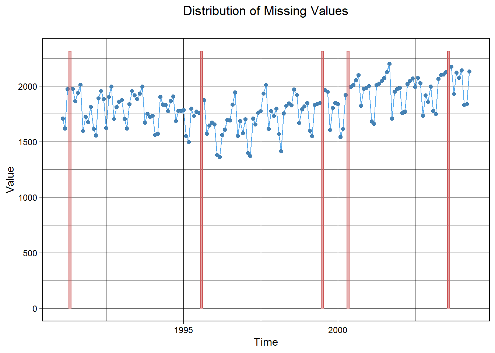
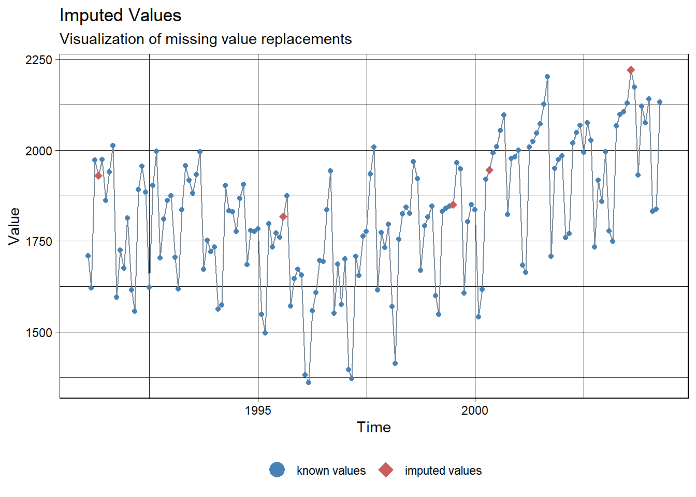
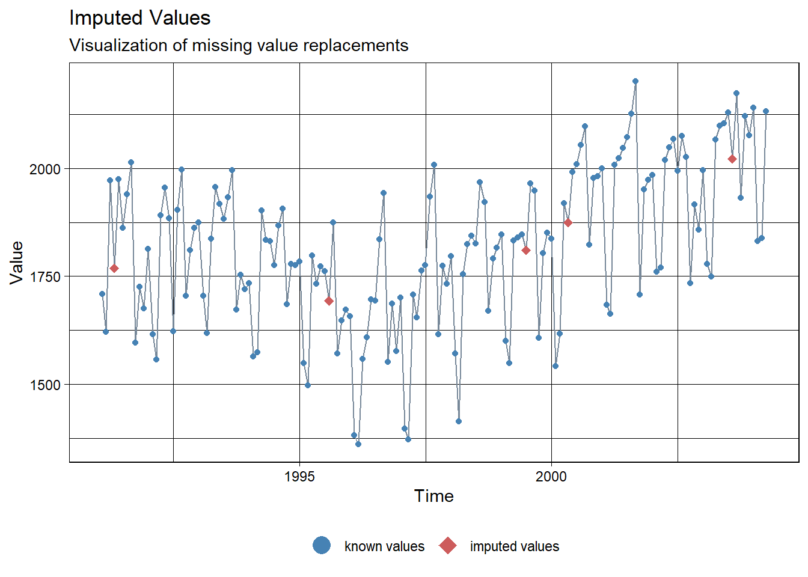
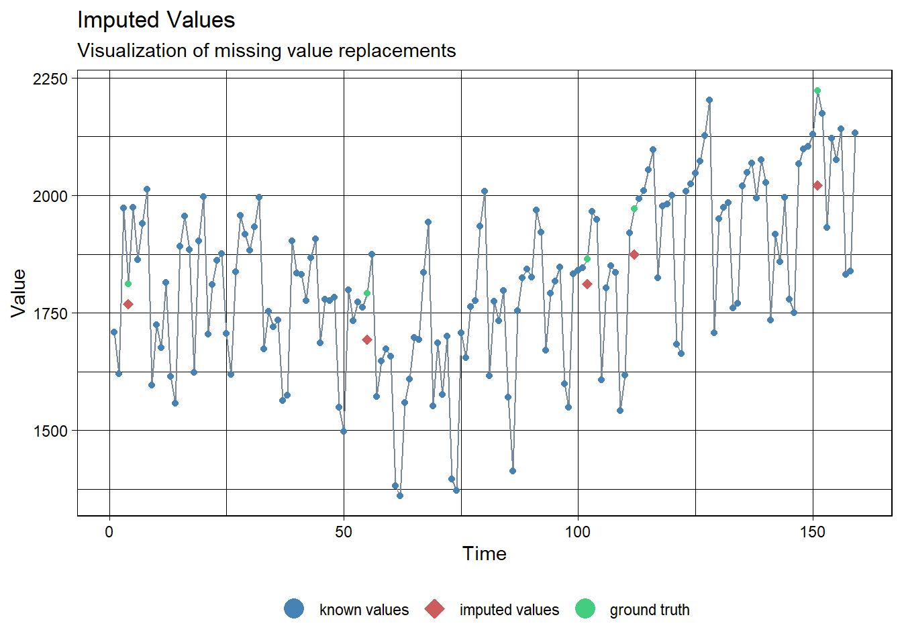
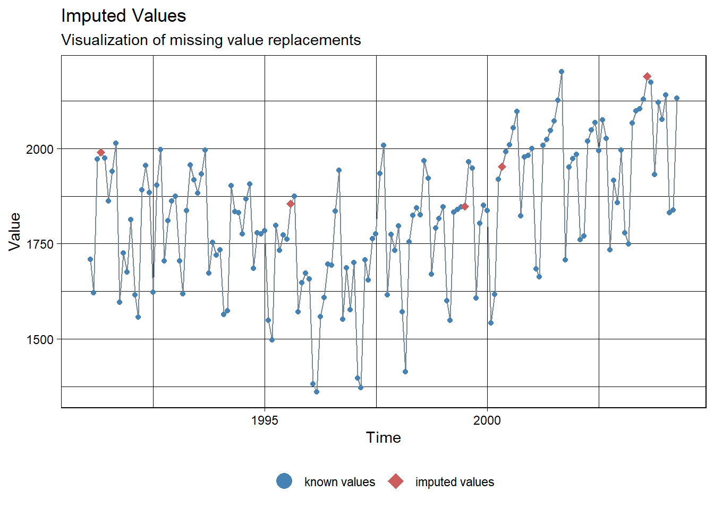

na_kalman(x, model = "StructTS", smooth = TRUE, ...)17 Imputation using Kalman Smoothing
Kalmanl Smoothing을 이용하여 시계열 데이터를 Imputation하는 방법에 대해 설명한다.
17.1 Structural Time Series Model
\[ \begin{aligned} Y_{t}&=Z^{T}_{t}\alpha_{t}+\epsilon_{t},~~~~~~~\epsilon_{t}\sim N_{m}(0,H_{t}), \\ \alpha_{t+1}&=T_{t}\alpha_{t}+R_{t}\eta_{t},~~~\eta_{t}\sim N_{q}(0,Q_{t}),\\ \alpha_{1} &\sim N_{p} (\mu_{1}, P_{1}) \end{aligned} \]
- 첫번째는 관측방정식, 두번째는 상태방정식이다.
- \(Y_{t}\) : 시점 \(t\)에서 관측값
- \(\alpha_{t}\) : 시점 \(t\)에서 관측할 수 없는 상태 (시계열에서 추세, 계절성 등이 상태가 될 수 있음)
- 직접 관찰할 수 없지만 시간이 지남에 따라 어떻게 변화하는지 알고 있다고 가정하는 것이 합리적
- 시간이 지남에 따라 어떻게 변화하는지 정의
- \(Z_{t}\), \(T_{t}\), \(R_{t}\) : 0과 1을 포함하여 알고 있는 값과 미지의 모수를 포함하는 행렬
- \(Z_{t}\) : \(p\times m\) 결과 행렬 (Output Matirx)
- \(T_{t}\) : \(p\times p\) 전이 행렬 (Transition Matrix)
- \(R_{t}\) : \(p\times q\) 제어 행렬 (Control Matrix)
- \(\epsilon_{t}\), \(\eta_{t}\) : 오차로써, 연속적으로 상관관계가 없으며 또한 모든 기간 동안 서로 상관관계가 없는 것으로 가정한다.
- \(\epsilon_{t}\) : \(m\times m\) 분산공분산행렬(Variance-covariance Matrix) \(H_{t}\)을 가진 \(m\times 1\) 벡터
- \(\eta_{t}\) : \(q\times q\) 상태확산행렬(State Diffusion Matrix) \(Q_{t}\)을 가진 \(q \times 1\) 벡터 (\(q\le d\))
- 상태 \(\alpha_{t}\)를 추정하는 방법은 두 가지가 있다.
- Kalman Filtering
- 관측값을 예측할 때 사용
- Kalman Smoothing
결측값이 있을 때 유용
- Kalman Filtering
17.2 Kalman Smoothing
- 특정 기간 또는 모든 시간동안 주어진 시계열 데이터 \(y_{1}, \ldots, y_{T}\)가 주어졌을 때, 상태 \(\alpha_{t}(t<T)\)를 추정하는 방법
- \(\hat{\alpha}_{t} = E(\alpha_{t}|y_{1},\ldots, y_{T})\)
- \(\alpha_{t}|y_{1},\ldots, y_{T}\)의 사후 분포를 이용하여 계산
- 과거, 현재 그리고 미래 데이터를 이용하기 때문에, Kalman Filtering보다 정확
17.3 imputeTS Package
imputeTSPackage은 단변량 시계열 데이터 (Univariate time series)에 결측값을 Imputation하기 위해 개발된 패키지이다.na_kalmna()함수로 Kalman Smoothing 방법을 이용한 Imputation을 할 수 있다.- 자세한 옵션은 여기를 참고한다.
- x : 결측값이 있는 시계열 데이터 또는 수치형 벡터
- model : Kalman Smoothing이 수행되는 상태 공간 모형(State Space Model)
auto.arima: auto.arima에 의해 적합된 ARIMA 모형- ARIMA 모형은 Structural Time Series Model으로 표현 가능
- ARIMA 모형은 Structural Time Series Model으로 표현 가능
StructTS: 최대 우도(Maximum Likelihood)에 의해 적합된 structural 모형
- smooth :
TRUE이면, Kalman Smoothing,FALSE이면 Kalmna Run(Kalman Filtering)
17.3.1 Process
na_kalmna()의 Imputation 과정은 다음과 같다.
- 주어진 시계열 데이터의
NA의 위치를 파악한다. - 시계열 데이터를 model에 명시한 함수를 이용하여 적합한다.
- 적합된 모형을 이용하여 Kalman Smoothing/Run 방법으로 상태 \(\hat{\alpha}_{t}\)를 추정한다.
NA를 추정된 \(\hat{y}_{t}=Z^{T}_{t}\hat{\alpha}_{t}\)로 대체한다.
17.3.2 StructTS
statsPackage에 있는 함수로, 주어진 시계열 데이터를 structural 모형에 적합한다.- 최대 우도를 이용해 structural 모형의 모수(상태와 관측값의 분산)를 찾는다.
- 자세한 옵션은 여기, 함수 내부는 여기를 참조한다.
StructTS(x, type = c("level", "trend", "BSM"), ...)- x : 단변량 시계열 데이터
- type : 생략할 경우, x의 frequency가 1보가 크면, “BSM”, 아니면 Local Linear Trend Model
- level : Local Level Model
- \(Z^{T}_{t} = 1\), \(T_{t} = 1\), \(\alpha_{t}=\mu_{t}\), \(R_{t} = 1\), \(\eta_{t} = \xi_{t}\)일 때, 모형식은 다음과 같다.
- level : Local Level Model
\[ \begin{aligned} Y_{t} &= \mu_{t} + \epsilon_{t},~~~~\epsilon_{t}\sim N(0, \sigma^2_{\epsilon})\\ \mu_{t+1} &= \mu_{t} + \xi_{t}, ~~~\xi_{t}\sim N(0,\sigma^2_{\xi }), \end{aligned} \]
- trend : Local Linear Trend Model
- \(Z^{T}_{t} = (1, 0)\), \(T_{t} = \left[\begin{matrix} 1 & 1\\ 0 & 1 \end{matrix}\right]\), \(\alpha_{t}=(\mu_{t}, \delta_{t})^{T}\), \(R_t=\left[\begin{matrix} 1 & 0 \\ 0 & 1 \end{matrix}\right]\), \(\eta_{t}=(\xi_{t},\zeta_{t})^{T}\)일 때, 모형식은 다음과 같다.
- trend : Local Linear Trend Model
\[ \begin{aligned} Y_{t} &= \mu_{t} + \epsilon_{t},~~~~~~~~~~\epsilon_{t}\sim N(0, \sigma^2_{\epsilon})\\ \mu_{t+1} &= \mu_{t} + \delta_{t} + \xi_{t}, ~~~\xi_{t}\sim N(0,\sigma^2_{\xi }),\\ \delta_{t+1} &= \delta_{t} + \zeta_{t}, ~~~~~~~~~~~~\zeta_{t}\sim N(0,\sigma^2_{\zeta}), \end{aligned} \]
- BSM : Basic Structural Model로써, Local Linear Trend + Seasonal Component
- \(Z^{T}_{t} = (1,0,1,\ldots, 0)\), \(T_{t} = \left[\begin{smallmatrix} 1 & 1 & \\ 0 & 1 & \\ & & -1 & - 1 & \cdots & -1 & -1 \\ & & 1 & 0 & \cdots &0& 0\\ & & 0 & 1 & \cdots & 0 &0 \\ & & \vdots &\vdots &\vdots &\vdots &\vdots &\\ & & 0 & 0 & \cdots & 1 & 0 \end{smallmatrix}\right]\), \(\alpha_{t} = (\mu_{t}, \delta_{t}, \tau_{t}, \ldots, \tau_{t-S+2})^{T}\), \(R_{t}=\left[\begin{smallmatrix}1 & 0 \\ 0 & 1 \\ & & 1 \\ & & 0 \\ & & \vdots \\ & & 0 \\ \end{smallmatrix}\right]\), \(\eta_{t}=(\xi_{t}, \zeta_{t},\omega_{t})^{T}\)일 때, 모형식은 다음과 같다.
- BSM : Basic Structural Model로써, Local Linear Trend + Seasonal Component
\[ \begin{aligned} Y_{t} &= \mu_{t} + \tau_{t} + \epsilon_{t},~~~~\epsilon_{t}\sim N(0, \sigma^2_{\epsilon})\\ \mu_{t+1} &= \mu_{t} + \delta_{t} + \xi_{t}, ~~~~~~~~~\xi_{t}\sim N(0,\sigma^2_{\xi }),\\ \delta_{t+1} &= \delta_{t} + \zeta_{t}, ~~~~~~~~~~~~~~~~~~~~~\zeta_{t}\sim N(0,\sigma^2_{\zeta})\\ \tau_{t+1}&=-\sum_{s=1}^{S-1} \tau_{t+1-s} + \omega_{t}, ~~~~~~~~~~\omega_{t}\sim N(0,\sigma^2_{\omega }) \end{aligned} \]
17.4 Application
17.4.1 데이터 불러오기
pacman::p_load("dplyr",
"xts",
"ggplot2",
"imputeTS")
# In Mac
# guess_encoding("Amtrak.csv")
# Amtrak.data <- read.csv("Amtrak.csv", fileEncoding="EUC-KR")
Amtrak.data <- read.csv(".../Amtrak.csv")
Amtrak.data %>%
as_tibble# A tibble: 159 × 2
Month Ridership
<chr> <dbl>
1 01/01/1991 1709.
2 01/02/1991 1621.
3 01/03/1991 1973.
4 01/04/1991 1812.
5 01/05/1991 1975.
6 01/06/1991 1862.
7 01/07/1991 1940.
8 01/08/1991 2013.
9 01/09/1991 1596.
10 01/10/1991 1725.
# ℹ 149 more rows17.4.2 데이터 전처리
# Convert to ts for Target
ridership.ts <- ts(Amtrak.data$Ridership,
start = c(1991, 2), # 시계열의 시작 연도 / c(1991, 2) : 1991년 2월 -> 첫 번째 시계열은 제거했기 때문
frequency = 12) # 주기 / 월별 시계열로 1년에 12번 관측
# 시계열 그림
plot(ridership.ts,
xlab = "Time", ylab = "Ridership (in 000s)",
ylim = c(1300, 2300))
Caution! CSV 파일로 불러온 데이터를 살펴보면 승객 수를 포함하는 변수 Ridership가 수치형임을 알 수 있다. 시계열 데이터 분석을 위해 함수 ts()를 이용하여 해당 변수를 시계열 객체로 변환해야 한다.
Result! 시계열 그림을 살펴보면 Amtrak 데이터는 U자 형태의 추세를 발견할 수 있으며, 여름(7월과 8월) 동안에 승객이 급증하는 뚜렷한 계절변동도 볼 수 있다.
17.4.3 결측값 생성
# NA 생성
set.seed(100)
loc <- sample(1:length(ridership.ts), 5) # Randomly Location
ridership.ts.NA <- ridership.ts
ridership.ts.NA[loc] <- NA
# NA 갯수와 위치
xts(ridership.ts.NA, order = as.Date(ridership.ts.NA)) [,1]
1991-02-01 1708.917
1991-03-01 1620.586
1991-04-01 1972.715
1991-05-01 NA
1991-06-01 1974.964
1991-07-01 1862.356
1991-08-01 1939.860
1991-09-01 2013.264
1991-10-01 1595.657
1991-11-01 1724.924
1991-12-01 1675.667
1992-01-01 1813.863
1992-02-01 1614.827
1992-03-01 1557.088
1992-04-01 1891.223
1992-05-01 1955.981
1992-06-01 1884.714
1992-07-01 1623.042
1992-08-01 1903.309
1992-09-01 1996.712
1992-10-01 1703.897
1992-11-01 1810.000
1992-12-01 1861.601
1993-01-01 1875.122
1993-02-01 1705.259
1993-03-01 1618.535
1993-04-01 1836.709
1993-05-01 1957.043
1993-06-01 1917.185
1993-07-01 1882.398
1993-08-01 1933.009
1993-09-01 1996.167
1993-10-01 1672.841
1993-11-01 1752.827
1993-12-01 1720.377
1994-01-01 1734.292
1994-02-01 1563.365
1994-03-01 1573.959
1994-04-01 1902.639
1994-05-01 1833.888
1994-06-01 1831.049
1994-07-01 1775.755
1994-08-01 1867.508
1994-09-01 1906.608
1994-10-01 1685.632
1994-11-01 1778.546
1994-12-01 1775.995
1995-01-01 1783.350
1995-02-01 1548.415
1995-03-01 1496.925
1995-04-01 1798.316
1995-05-01 1732.895
1995-06-01 1772.345
1995-07-01 1761.207
1995-08-01 NA
1995-09-01 1874.820
1995-10-01 1571.309
1995-11-01 1646.948
1995-12-01 1672.631
1996-01-01 1656.845
1996-02-01 1381.758
1996-03-01 1360.852
1996-04-01 1558.575
1996-05-01 1608.420
1996-06-01 1696.696
1996-07-01 1693.183
1996-08-01 1835.516
1996-09-01 1942.573
1996-10-01 1551.401
1996-11-01 1686.508
1996-12-01 1576.204
1997-01-01 1700.433
1997-02-01 1396.588
1997-03-01 1371.690
1997-04-01 1707.522
1997-05-01 1654.604
1997-06-01 1762.903
1997-07-01 1775.800
1997-08-01 1934.219
1997-09-01 2008.055
1997-10-01 1615.924
1997-11-01 1773.910
1997-12-01 1732.368
1998-01-01 1796.626
1998-02-01 1570.330
1998-03-01 1412.691
1998-04-01 1754.641
1998-05-01 1824.932
1998-06-01 1843.289
1998-07-01 1825.964
1998-08-01 1968.172
1998-09-01 1921.645
1998-10-01 1669.597
1998-11-01 1791.474
1998-12-01 1816.714
1999-01-01 1846.754
1999-02-01 1599.427
1999-03-01 1548.804
1999-04-01 1832.333
1999-05-01 1839.720
1999-06-01 1846.498
1999-07-01 NA
1999-08-01 1965.743
1999-09-01 1949.002
1999-10-01 1607.373
1999-11-01 1803.664
1999-12-01 1850.309
2000-01-01 1836.435
2000-02-01 1541.660
2000-03-01 1616.928
2000-04-01 1919.538
2000-05-01 NA
2000-06-01 1992.301
2000-07-01 2009.763
2000-08-01 2053.996
2000-09-01 2097.471
2000-10-01 1823.706
2000-11-01 1976.997
2000-12-01 1981.408
2001-01-01 2000.153
2001-02-01 1683.148
2001-03-01 1663.404
2001-04-01 2007.928
2001-05-01 2023.792
2001-06-01 2047.008
2001-07-01 2072.913
2001-08-01 2126.717
2001-09-01 2202.638
2001-10-01 1707.693
2001-11-01 1950.716
2001-12-01 1973.614
2002-01-01 1984.729
2002-02-01 1759.629
2002-03-01 1770.595
2002-04-01 2019.912
2002-05-01 2048.398
2002-06-01 2068.763
2002-07-01 1994.267
2002-08-01 2075.258
2002-09-01 2026.560
2002-10-01 1734.155
2002-11-01 1916.771
2002-12-01 1858.345
2003-01-01 1996.352
2003-02-01 1778.033
2003-03-01 1749.489
2003-04-01 2066.466
2003-05-01 2098.899
2003-06-01 2104.911
2003-07-01 2129.671
2003-08-01 NA
2003-09-01 2174.360
2003-10-01 1931.406
2003-11-01 2121.470
2003-12-01 2076.054
2004-01-01 2140.677
2004-02-01 1831.508
2004-03-01 1838.006
2004-04-01 2132.446as.Date(ridership.ts.NA) [1] "1991-02-01" "1991-03-01" "1991-04-01" "1991-05-01" "1991-06-01" "1991-07-01" "1991-08-01" "1991-09-01" "1991-10-01" "1991-11-01" "1991-12-01" "1992-01-01" "1992-02-01" "1992-03-01" "1992-04-01"
[16] "1992-05-01" "1992-06-01" "1992-07-01" "1992-08-01" "1992-09-01" "1992-10-01" "1992-11-01" "1992-12-01" "1993-01-01" "1993-02-01" "1993-03-01" "1993-04-01" "1993-05-01" "1993-06-01" "1993-07-01"
[31] "1993-08-01" "1993-09-01" "1993-10-01" "1993-11-01" "1993-12-01" "1994-01-01" "1994-02-01" "1994-03-01" "1994-04-01" "1994-05-01" "1994-06-01" "1994-07-01" "1994-08-01" "1994-09-01" "1994-10-01"
[46] "1994-11-01" "1994-12-01" "1995-01-01" "1995-02-01" "1995-03-01" "1995-04-01" "1995-05-01" "1995-06-01" "1995-07-01" "1995-08-01" "1995-09-01" "1995-10-01" "1995-11-01" "1995-12-01" "1996-01-01"
[61] "1996-02-01" "1996-03-01" "1996-04-01" "1996-05-01" "1996-06-01" "1996-07-01" "1996-08-01" "1996-09-01" "1996-10-01" "1996-11-01" "1996-12-01" "1997-01-01" "1997-02-01" "1997-03-01" "1997-04-01"
[76] "1997-05-01" "1997-06-01" "1997-07-01" "1997-08-01" "1997-09-01" "1997-10-01" "1997-11-01" "1997-12-01" "1998-01-01" "1998-02-01" "1998-03-01" "1998-04-01" "1998-05-01" "1998-06-01" "1998-07-01"
[91] "1998-08-01" "1998-09-01" "1998-10-01" "1998-11-01" "1998-12-01" "1999-01-01" "1999-02-01" "1999-03-01" "1999-04-01" "1999-05-01" "1999-06-01" "1999-07-01" "1999-08-01" "1999-09-01" "1999-10-01"
[106] "1999-11-01" "1999-12-01" "2000-01-01" "2000-02-01" "2000-03-01" "2000-04-01" "2000-05-01" "2000-06-01" "2000-07-01" "2000-08-01" "2000-09-01" "2000-10-01" "2000-11-01" "2000-12-01" "2001-01-01"
[121] "2001-02-01" "2001-03-01" "2001-04-01" "2001-05-01" "2001-06-01" "2001-07-01" "2001-08-01" "2001-09-01" "2001-10-01" "2001-11-01" "2001-12-01" "2002-01-01" "2002-02-01" "2002-03-01" "2002-04-01"
[136] "2002-05-01" "2002-06-01" "2002-07-01" "2002-08-01" "2002-09-01" "2002-10-01" "2002-11-01" "2002-12-01" "2003-01-01" "2003-02-01" "2003-03-01" "2003-04-01" "2003-05-01" "2003-06-01" "2003-07-01"
[151] "2003-08-01" "2003-09-01" "2003-10-01" "2003-11-01" "2003-12-01" "2004-01-01" "2004-02-01" "2004-03-01" "2004-04-01"ggplot_na_distribution(as.numeric(ridership.ts.NA),
x_axis_labels = as.Date(ridership.ts.NA), subtitle = "") +
ggplot2::theme(plot.title = ggplot2::element_text(hjust = 0.5))
# ggplot_na_distribution(as.numeric(ridership.ts),
# x_axis_labels = as.Date(Amtrak.data$Month, format = "%m/%d/%Y"))17.4.4 Imputation
# 1. Using Basic Structural Model (Local Linear Trend + Seasonal) Due to frequency of ridership.ts.NA
Kalman.Imp <- na_kalman(ridership.ts.NA)
# Imputation 확인
Kalman.Imp[loc][1] 1849.782 1945.737 2221.376 1930.777 1817.434ggplot_na_imputations(ridership.ts.NA, Kalman.Imp, x_axis_labels = as.Date(ridership.ts.NA))
# 실제값과 비교
ggplot_na_imputations(ridership.ts.NA, Kalman.Imp, ridership.ts)# 2. Using Local Linear Trend
Kalman.Imp <- na_kalman(ridership.ts.NA, type="trend")
# Imputation 확인
Kalman.Imp[loc][1] 1810.990 1874.212 2021.916 1768.566 1692.744ggplot_na_imputations(ridership.ts.NA, Kalman.Imp, x_axis_labels = as.Date(ridership.ts.NA))
# 실제값과 비교
ggplot_na_imputations(ridership.ts.NA, Kalman.Imp, ridership.ts)
# 3. Auto.arima
Kalman.Imp.arima <- na_kalman(ridership.ts.NA, model = "auto.arima")
# Imputation 확인
Kalman.Imp.arima[loc][1] 1848.001 1952.100 2190.084 1990.073 1855.564ggplot_na_imputations(ridership.ts.NA, Kalman.Imp.arima, x_axis_labels = as.Date(ridership.ts.NA))
# 실제값과 비교
ggplot_na_imputations(ridership.ts.NA, Kalman.Imp.arima, ridership.ts)